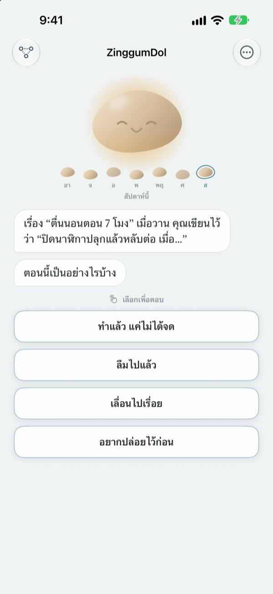
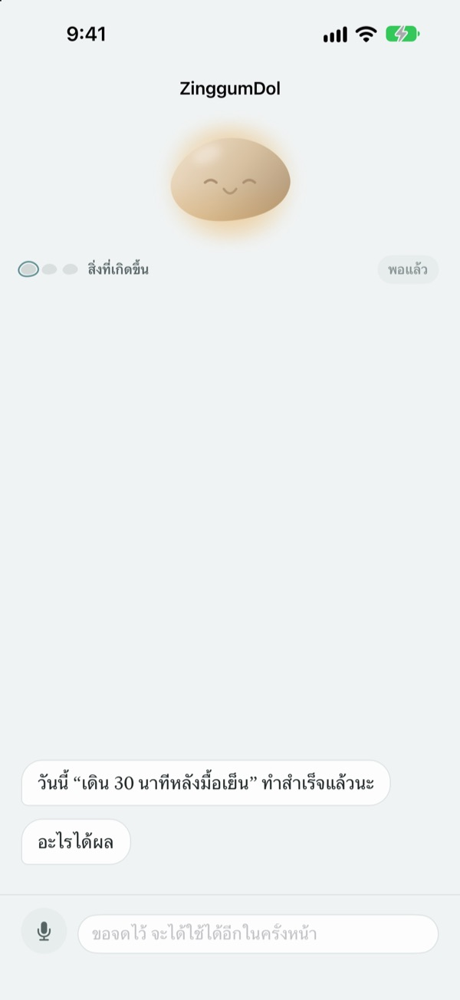
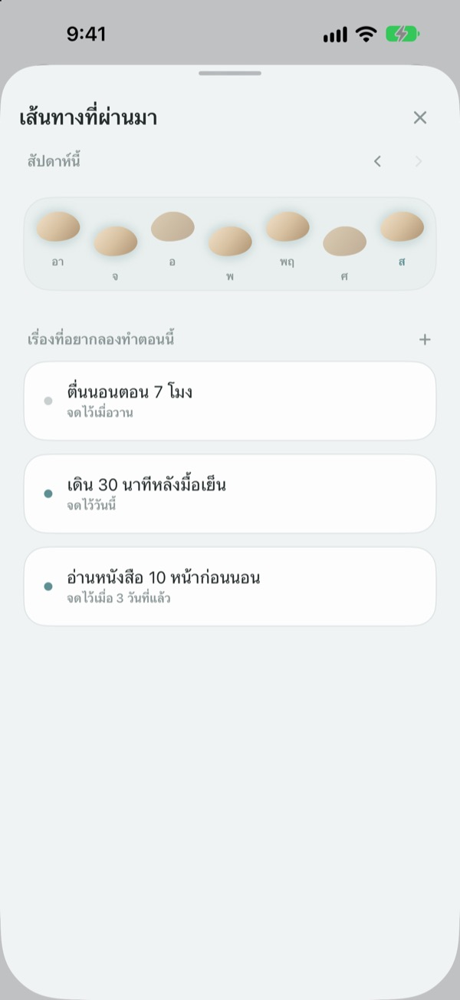
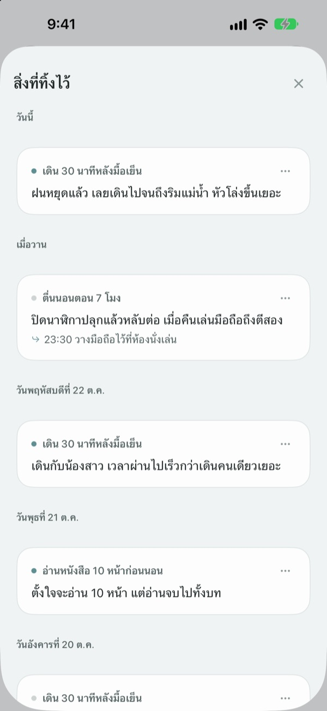

ก้าวพลาด
ไม่ได้แปลว่าตกลำธาร
วันที่พลาดเป้าหมาย ก้อนหินจะเป็นฝ่ายทักก่อน มันถามว่าเกิดอะไรขึ้น ไม่ใช่ถามว่าคุณทำอะไรผิด แล้วส่งเรื่องที่เกิดขึ้นกับความรู้สึกคืนให้แยกกัน
คุย จดบันทึก และดูเส้นทางที่ผ่านมาได้ฟรี ไม่ต้องสมัคร ไม่มีโฆษณา

ลองคุยกับก้อนหิน
วันนี้ตั้งใจจะออกไปเดินตอนเย็นแต่ไม่ได้ไป แตะเลือกคำตอบหรือพิมพ์เอง ก้อนหินจะตอบแบบเดียวกับในแอป
วันที่ไม่เป็นไปตามแผน คุณโทษตัวเองอยู่หรือเปล่า
คืนที่ไม่ได้ออกกำลังกาย ความคิดแรกมักเป็น "ทำไมเราเป็นแบบนี้" แต่ถ้ามองดีๆ วันนั้นต้องทำโอที ฝนตก และคุณก็เหนื่อยมาก ZinggumDol จะถามแยกกันว่าเกิดอะไรขึ้นและตอนนี้รู้สึกยังไง แล้ววางสองเรื่องไว้ข้างกัน พอเห็นว่าเป็นเพราะสถานการณ์ ไม่ใช่เพราะใจไม่สู้ ก้าวเล็กๆ ของพรุ่งนี้ก็หาง่ายขึ้น
ก้อนหินเป็นฝ่ายทักก่อน
ตั้งเป้าหมายไว้ ก้อนหินจะคอยดูทั้งวันที่ทำได้และวันที่ติดขัดไปกับคุณ วันที่พลาด มันจะถามว่า "เกิดอะไรขึ้น" แทนที่จะถามว่า "ทำไมไม่ทำ" และจำสิ่งที่คุณเล่าครั้งก่อนได้
วันที่ไม่อยากพิมพ์ พูดออกมาก็ได้ เสียงถูกแปลงในเครื่อง และไม่มีการเก็บไฟล์เสียง

เส้นทางที่ผ่านมาเรียงเป็นหินข้ามลำธาร
แต่ละสัปดาห์เรียงเป็นแถวหินข้ามลำธาร วันที่ไม่ได้ก้าวก็ยังมีหินอยู่ ไม่มีอะไรถูกลบ
ถึงจะมีช่องว่างบ้าง ก็เห็นได้ทันทีว่าทางยังไปต่อ

ย้อนอ่านเรื่องที่เคยเล่า
สิ่งที่เกิดขึ้น ความรู้สึกตอนนั้น และสิ่งที่จะลองครั้งหน้า สะสมเรียงตามวันที่ ย้อนอ่านวันที่ติดขัดแบบเดียวกัน ก็จะเห็นว่าอะไรได้ผล
ยังดูคำพูดของก้อนหินได้จากวิดเจ็ตบนหน้าจอโฮม และรับการแจ้งเตือนให้ทบทวนวันนี้ตามเวลาที่ตั้งไว้

เริ่มได้ใน 3 ขั้นตอน
- 1
เขียนเป้าหมายหนึ่งข้อ
เช่น "เดิน 30 นาทีหลังมื้อเย็น"
- 2
เปิดแอปตอนจบวัน
ก้อนหินจะถามว่าวันนี้เป็นยังไงบ้าง ตั้งแจ้งเตือนไว้จะได้ไม่ลืม
- 3
แตะเลือกหรือพิมพ์ตอบ
หยุดได้ทุกเมื่อด้วย
อยากปล่อยไว้ก่อน
บทสนทนาดำเนินไปแบบนี้
- สิ่งที่เกิดขึ้น
- ถามแค่ข้อเท็จจริงว่าอะไรมาขวาง
- ความรู้สึก
- เลือกความรู้สึกตอนนี้จาก 5 ระดับ
- มองย้อนกลับ
- ก้อนหินส่งเรื่องที่เกิดขึ้นกับความรู้สึกคืนให้แยกกัน
- ก้าวต่อไป
- คุณเลือกเรื่องเล็กๆ เอง แค่ห้านาทีก็พอ
- สรุป
- วันที่ใจหดหู่มาก มันจะไม่ถามต่อและชวนให้พักก่อน
หยุดได้ทุกขั้นตอน และสิ่งที่พูดไว้ก่อนหน้าจะยังอยู่
คุยและจดบันทึกฟรี อยากได้มากกว่านั้นค่อยใช้ Pro
ฟรี
- บทสนทนากับก้อนหินทั้งหมด
- เป้าหมายสูงสุด 3 ข้อ
- พูดแทนการพิมพ์
- เส้นทางที่ผ่านมาและทุกสิ่งที่เขียนไว้
- วิดเจ็ตหน้าจอโฮมและแจ้งเตือนรายวัน
- ล็อกด้วยรหัสผ่าน
ZinggumDol Pro
- ตั้งเป้าหมายได้ไม่จำกัด
- เลือกผิวก้อนหินได้ 6 แบบ
- ส่งออกบันทึกเป็นไฟล์ข้อความ
ซื้อครั้งเดียว ใช้ได้ตลอด ไม่ใช่การสมัครสมาชิก
ไม่มีหน้าชำระเงินเด้งขึ้นกลางบทสนทนา ถ้าใช้เครื่องใหม่หรือติดตั้งแอปใหม่ ให้แตะ "กู้คืนการซื้อ" ในการตั้งค่า
คำถามที่พบบ่อย
วันที่พลาดต้องเขียนเหตุผลทุกครั้งไหม
ไม่ต้อง แตะ อยากปล่อยไว้ก่อน ได้ทุกขั้นตอน บทสนทนาจะจบทันที สิ่งที่พูดไว้จะยังอยู่ ไว้คุยต่อทีหลังได้
จริงๆ ทำแล้ว แต่แอปบอกว่ายังไม่ได้ทำ
แตะ ทำแล้ว แต่ไม่ได้บันทึก ก้อนหินจะรับคำแก้นั้น แล้วถามแทนว่าอะไรช่วยได้ สิ่งที่ได้ผลจะถูกจดไว้ และจะหยิบมาเตือนเมื่อคุณติดขัดครั้งหน้า
สิ่งที่พูดออกไปไปอยู่ที่ไหน
เสียงถูกแปลงเป็นข้อความในเครื่อง และไม่มีการเก็บไฟล์เสียง ในเครื่องที่รองรับ ประโยคจะถูกเกลาให้อ่านง่ายขึ้นด้วย ซึ่งก็ทำในเครื่องเช่นกัน
ตั้งเป้าหมายได้กี่ข้อ
ฟรี 3 ข้อ เป้าหมายที่จบแล้วให้ วางลง ในเส้นทางที่ผ่านมา จะได้มีที่ว่าง ถ้าอยากได้มากกว่านั้นต้องใช้ ZinggumDol Pro
ZinggumDol Pro เป็นการสมัครสมาชิกไหม
ไม่ใช่ จ่ายครั้งเดียวแล้วเป็นของคุณ ถ้าใช้เครื่องใหม่หรือติดตั้งใหม่ ให้แตะ กู้คืนการซื้อ ในการตั้งค่า
คนอื่นจะเห็นบันทึกของฉันไหม
ไม่ต้องสมัครบัญชี บันทึกอยู่แค่ในเครื่องและ iCloud ของคุณ และตั้งรหัสผ่านล็อกแอปได้ในการตั้งค่า สิ่งที่เขียนจะไม่ถูกส่งไปหาผู้พัฒนา สถิติการใช้งานแบบไม่ระบุตัวตนก็ปิดได้ในการตั้งค่า
อยากเปลี่ยนเวลาแจ้งเตือน
ไปที่ การแจ้งเตือนรายวัน ในการตั้งค่า เพื่อเปิด ปิด และเลือกเวลา
ก้อนหินจะพูดถึงเรื่องที่เคยทำได้ด้วยไหม
ใช่ มันจำได้ว่าอะไรช่วยคุณ และในวันที่หนักใจ มันจะเตือนถึงสิ่งที่คุณเพิ่งทำได้
ลบทุกอย่างได้อย่างไร
แตะ ลบบันทึกทั้งหมด ในการตั้งค่า เป้าหมายและบันทึกจะหายไปถาวร รวมถึงในเครื่องอื่นที่เชื่อมผ่าน iCloud การตั้งค่าและการซื้อยังอยู่ ถ้ามี Pro สามารถเก็บสำเนาไว้ก่อนด้วย ส่งออกบันทึก
ติดต่อได้ทางไหน
ผ่าน "ส่งความคิดเห็น" ในการตั้งค่าของแอป หรือส่งอีเมลมาที่อยู่ด้านล่าง
มีคำถามหรือข้อเสนอแนะ เขียนมาที่ leeo@kakao.com